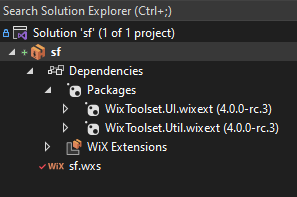
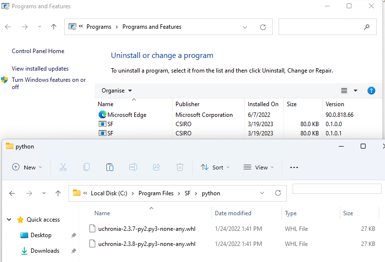
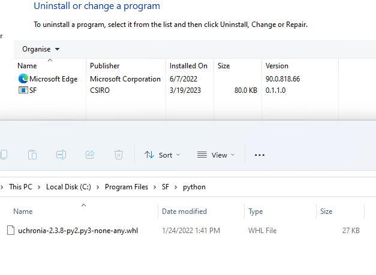

Background
Follow up on Windows installer with WiX 4 - part 2
Initially, for this post, I thought I would tackle having a UI element in the installer to let the use specify an install directory. However as I looked into it, I could not intuit how the examples I was trying to adapt worked.
So instead, let’s bed down our efforts so far, expand to several components, and set an environment variable, which is required by the software stack.
Walkthrough
I think it may be time to start working not only from the command line and text editor but use the Heatwave extensions from Visual Studio 2022.
Making a wixproj
The .wixproj file obtained from the upgrade of the WiX3 example led to:
<Project Sdk="WixToolset.Sdk/4.0.0-rc.3">
<PropertyGroup Condition=" '$(Configuration)|$(Platform)' == 'Debug|x86' ">
<DefineConstants>Debug</DefineConstants>
</PropertyGroup>
<ItemGroup>
<Content Include="InstallationStages.wxi" />
<Content Include="MyAppendScript.ps1" />
</ItemGroup>
<ItemGroup>
<PackageReference Include="WixToolset.UI.wixext" Version="4.0.0-rc.3" />
<PackageReference Include="WixToolset.Util.wixext" Version="4.0.0-rc.3" />
</ItemGroup>
</Project>We probably can remove much of it. <Content Include="InstallationStages.wxi" /> defines some properties. I am a bit puzzled that Product.wsx and MyCustomPropertiesDlg.wxs are not included in the project though. May be implicit? It seems so. Same as C# projects, now that I recall.
<Project Sdk="WixToolset.Sdk/4.0.0-rc.3">
<ItemGroup>
<PackageReference Include="WixToolset.UI.wixext" Version="4.0.0-rc.3" />
<PackageReference Include="WixToolset.Util.wixext" Version="4.0.0-rc.3" />
</ItemGroup>
</Project>
Let’s try to build from VS2022. It builds in Debug/x64 mode, and:
error WIX0204: ICE80: This 64BitComponent filLCSE8SdBZxus.pA1ZmveUFeYihY uses 32BitDirectory InstallFolder Fair enough. But what is the 64 bits equivalent?
<StandardDirectory Id="ProgramFilesFolder"> is probably a 32bits location by default. The StandardDirectoryType reference doc lists ProgramFiles64Folder as possible Id.
OK, it builds.
It is probably time to set up a dedicated git repository. sf-installer
At this point, repo at commit fda17e609e784791935b45f96e0c79a6dd2cc307
Setting an environment variable
Installing SF on Windows includes setting up an environment variable LIBRARY_PATH to a partent of the path where binaries are installed. We make our installer a bit more consistent with that manual procedure.
<StandardDirectory Id="ProgramFiles64Folder">
<Directory Id="InstallFolder" Name="SF">
<Directory Id="LibsFolder" Name="libs">
<Directory Id="Libs64Folder" Name="64">
</Directory>
</Directory>
</Directory>
</StandardDirectory>And I somehow figured that I need to add an Environment element like so.
<Component Guid="243e7812-1111-1111-1111-123456789112">
<Environment Id="library_path" Action="set" Name="LIBRARY_PATH" Value="c:\Program Files\SF\libs" Separator=";" System="yes" Part="last" Permanent="true"/>
<File Source="C:\local\libs\64\boost_chrono-vc142-mt-gd-x64-1_79.dll"/>
</Component>A priori I do not know how to pass such a variable to the value in XML file. Thankfully the WiX Cookbook - setting up an environment variable has an example that includes using [INSTALLFOLDER] which looks like some form of variable substitution.
So, trying
<Environment Id="library_path" Action="set" Name="LIBRARY_PATH" Value="[LibsFolder]" Separator=";" System="yes" Part="last" Permanent="true"/>And after installation in the sandbox, the new environment variable appears fine in a new CMD prompt: echo %LIBRARY_PATH% returns C:\Program Files\SF\libs\.
At this point, repo at commit 4d8d1d7c8b50221c7f63af3aa96115c438cb5055
Adding another Component: python wheels
The software stack comprises installable python wheels. Let’s create a directory structure to install to. Note that the installation for the wheels is just copying them; the variety of ways these can be used on the installed machine is too wide.
<StandardDirectory Id="ProgramFiles64Folder">
<Directory Id="InstallFolder" Name="SF">
<Directory Id="LibsFolder" Name="libs">
<Directory Id="Libs64Folder" Name="64">
</Directory>
</Directory>
<Directory Id="PythonPkgsFolder" Name="python">
</Directory>
</Directory>
</StandardDirectory>Our new component. Note that adding to the already existing ComponentGroup leads to a failure to compile. Not entirely clear to me why, but this probably makes sense this way anyway.
<ComponentGroup Id="InstallPyComponentsTest" Directory="PythonPkgsFolder">
<Component Guid="aaaa7812-1111-1111-1111-123456789112">
<File Source="C:\local\python\uchronia-2.3.7-py2.py3-none-any.whl"/>
</Component>
</ComponentGroup>And for our set of features, “All”
<Feature Id="All">
<ComponentGroupRef Id="InstallComponentsTest"/>
<ComponentGroupRef Id="InstallPyComponentsTest"/>
</Feature>At this point, repo at commit 012521407cc63e1233ff40a784d17b5f43dc6caf
Managing source files
Looking forward to expand this installer, I have two topics I need to sort out:
- If I include header files as an option to install this will be a very large amount (if including boost) or at least unwieldy to handle.
- The python wheels such as
uchronia-2.3.7-py2.py3-none-any.whlmay change names with successive installers. This will also happen, though less frequently, for binary files when upgrading versions of e.g. Boost.
The page specifying source files does not really cover either topic.
Bob Arnson wrote about Paying for upgrades 15 years ago, but probably still has relevance.
Rob Mensching has a couple of episodes on version upgrades and effects on files, that relates to this. The Problem with Same Version Upgrades and The Real Problem with Same Version Upgrades in WiX v4
The UninstallWhenSuperseded attribute of the Component may be of use, to force an uninstallation before reinstall. If this is what it does, this has ramifications for install speed, but preferable nevertheless.
Trialling upgrade effects
Let’s set up an experiment. We build an installer with a uchronia-2.3.7-py2.py3-none-any.whl being installed. Then we simulate a new installer with a higher version number, and a changed file uchronia-2.3.8-py2.py3-none-any.whl
Rob demos how to pass preprocessor variables in All the Ways to Change. Variables and Variables. Directories and Properties t=685.
Let’s set up a Version=0.1.0.0 and Version="$(Version)" in the wsx file. Build, and save the installer in a 0.1 folder.
Now let’s change <File Source="C:\local\python\uchronia-2.3.7-py2.py3-none-any.whl"/> to File Source="C:\local\python\uchronia-2.3.8-py2.py3-none-any.whl"/> and create that wheel file. Build with Version=0.1.0.1 and back up the installer.
We now have a baseline folder 0.1, and several newer ones with respectrive versions 0.1.0.1 0.1.1.0 0.2.0.0
If we install version 0.1.0.1 on top of 0.1, the following happens:

I think this is exactly what Rob demonstrated in his “The Problem with Same Version Upgrades” videos, and I expected this. This is less intuitive to deduce what would happen if we install version 0.1.1.0 on top of 0.1. And the result is:

uchronia-2.3.7-py2.py3-none-any.whl has been removed! This is actually a behavior we want.
Conclusion
Enough for today. This is starting to take shape, but as expected quite a bit more work than the naive would have guessed.